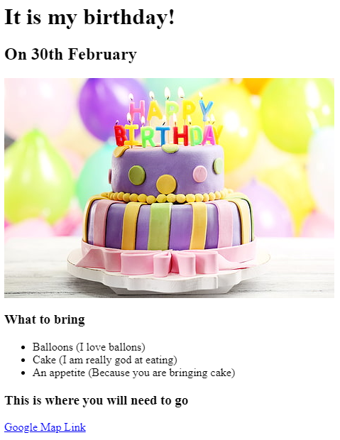

Thommy Xaysongkham
Summary
Looking for an internship while also expanding my skills in web development.
Technical Skills
- C, Python, Javascript, HTML
- Exposure to Visual Studio Code, Github, & Valgrind
Projects
Birthday Invite
July 11, 2024 | html
-
Utilized basic html elements to create a simple and funny birthday invite with a link and image.

Alarm System
November, 2023 | C, Breadboard
-
Designed and implemented a remote alarm system utilizing C programming language, breadboard electronics, and network components.
-
Integrated various electronic components, such as sensors, LEDs, and a buzzer, to achieve desired alarm functionality.
-
Showcased the ability to translate conceptual design into tangible, practical solutions with real-world applications.
Experience
Event Chair @ UTA - Society of Asian Scientist and Engineers (SASE)
May 2024 - Present
- Leadership Development - Engaging in leadership development programs to enhance your skills in team management, communication, and project coordination.
- Event Planning - Orchestrated the planning and execution of a diverse range of events and projects as the Event Chair, contributing to the enrichment of the club’s activities and fostering a vibrant community.
- Promoting Diversity and Inclusion - Contributing to promoting diversity and inclusion within the STEM (Science, Technology, Engineering, and Mathematics) community, focusing on supporting Asian scientists and engineers.
Education
University of Texas at Arligton - Bachelor of Science, Sophmore, Software Engineer, GPA 3.857, 2024